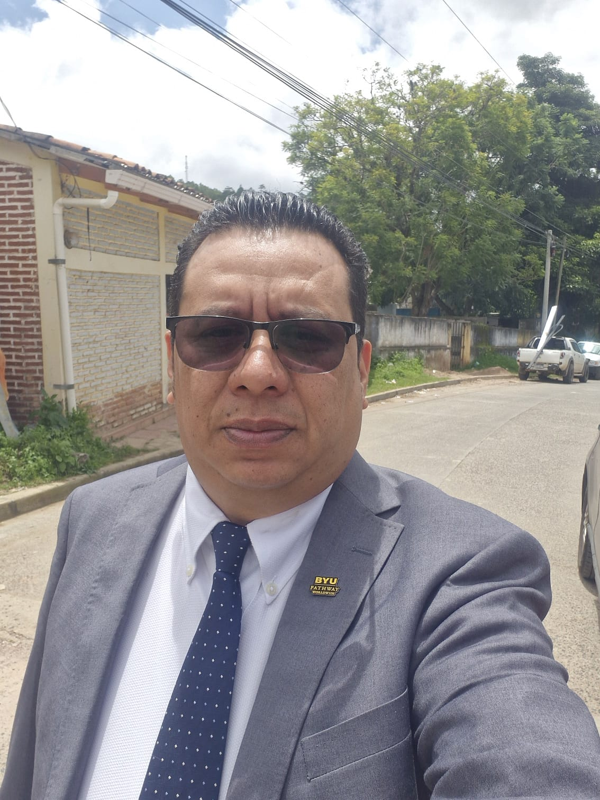

About Me
Hi, my name is Franklin Rivas , I am from Honduras, I'm 39 years old, I'm married and I have 5 children. I have always liked programing and web design, that is why even on my age I'm studying, one of my goals is to continue learning, no matter the age. I enjoy a lot when I have the chance to be listening music , I like Rock as well the Rap. .
Santa Lucia, Honduras

This is Santa Lucia, a small town near to the capital Tegucigalpa, it still preserves much of the colonial architecture and is one of the tourist destinations for foreigns and even for people who live in nearby cities. if you come to Hondurass Santa Lucia is one of the places you should visit.